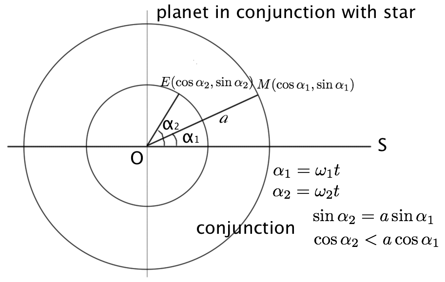
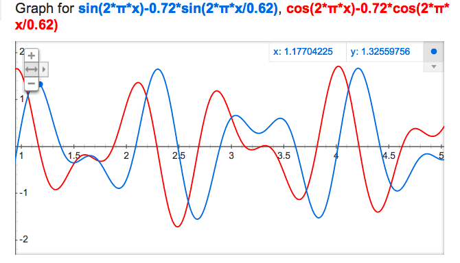
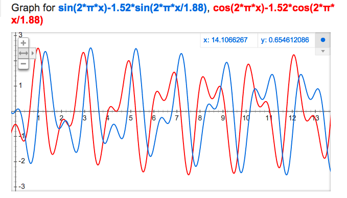
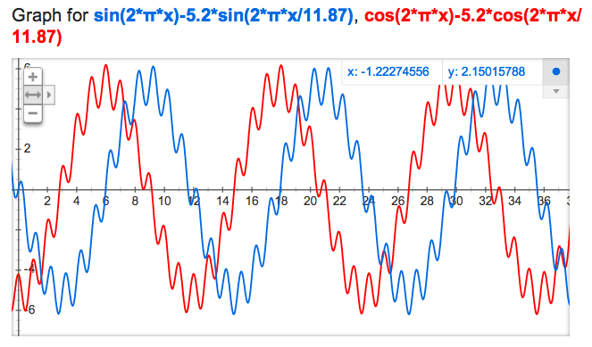

行星与恒星的合周期
行星与恒星相合是指从地球看过去，行星与该恒星在同一个方位，比如金星与昴星团相合。当然相合的条件首先是恒星位于太阳系行星运行的轨道平面上。那么某行星与某恒星相合的周期是多少呢?
假设行星的轨道都为圆，且与地球轨道在同一平面上. 行星与恒星相合的条件见下图(O为太阳，E是地球，M是行星，以火星为例，S是恒星的方向):(动画)

行星与恒星相合的条件
假设在 t=0 时相合，经过 t 的时间再次相合，则 e->v 必须达到与 t＝0 相同的方向，即E和M的y坐标相同，且E在M的左侧. 因此得到相合的条件:
且
如果是地球内侧的行星，如金星，则后面的不等式要反号。
该方程不好求解，因此把这两个等式和不等式的两项差值随时间的变化画出来(用 google 搜索直接可以画出曲线)。
如以金星为例，a=0.72, 公转周期为0.62年。

金星与恒星的会合
当蓝色曲线经过x轴，且红色曲线在x轴上面时发生一次相合。因此平均每年内发生1次相合。但也可能某年内相合2次，接下来的1年内没有。
火星(a=1.52, 公转周期1.88年)的曲线如下，蓝色曲线经过x轴，且红色曲线在x轴下面时相合，平均每2年1次(周期稍大于1／2, 如前26年发生14次)。

火星与恒星的会合
木星会合周期就更长了，基本上在木星的公转一周中，只有1次机会与其他恒星相合。但是由于木星的公转较慢，在发生相合的连续一两年内都处于相合的位置。

木星与恒星的会合
更外层行星与恒星的会合规律与木星相同，都是在公转一周中发生1次, 但每次会合的持续时间会比较长。
以上的曲线都能用 google search graph 的功能直接画出: